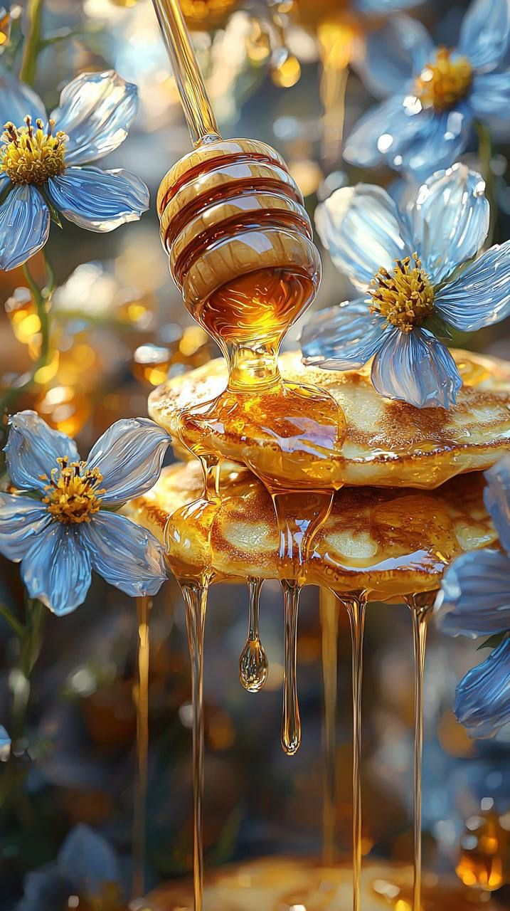
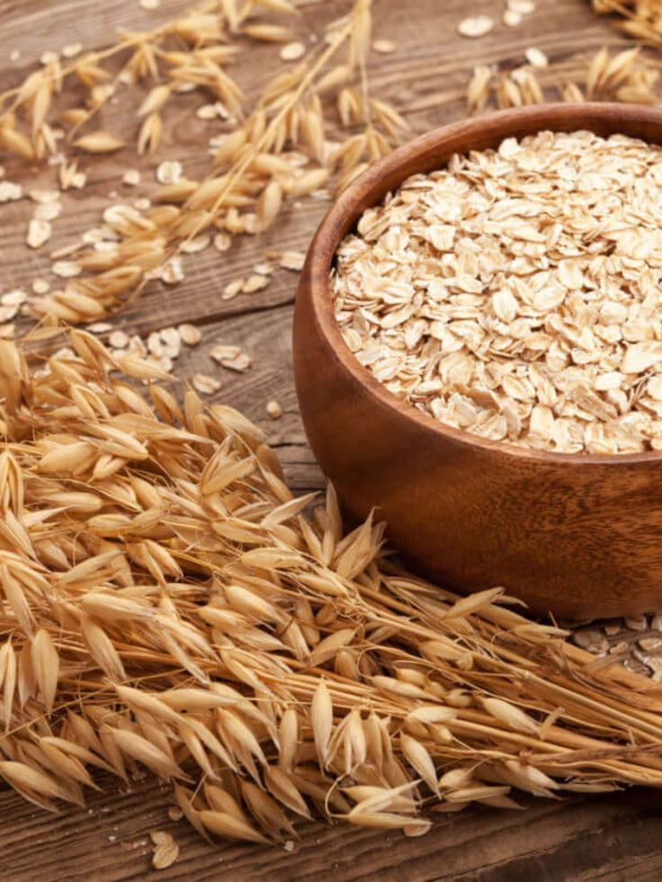

｡*˚:✧｡Produtos da Feira
Kiwi🥝
 Cultivado em trepadeiras, com o devido cuidado e preparo.
Cultivado em trepadeiras, com o devido cuidado e preparo.
Mel Puro🍯
Mel orgânico direto das colmeias do oeste do paraná.Aveia em flocos🌾
Sem agrotóxicos, e com máxima dedicação em seu lavradio.Chá verde🍵
Aperfeiçoamento da receita tradicional, com as folhas de camellia sinensis.｡*˚:✧｡Curiosidades
- O agro brasileiro movimentou cerca de 2,72 trilhões de reais no PIB do país.
- O café chegou ao Brasil no século XVIII, e revolucionou a economia brasileira.
- Em 30 anos, o Brasil investiu cada vez mais em práticas agrícolas sustentáveis.